CAMSHAFT > INSTALLATION |
| 1. INSTALL CAMSHAFT SUB-GEAR |
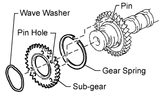 |
Install the gear spring, sub-gear and wave washer.
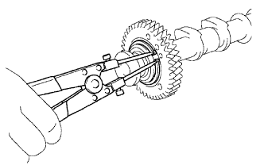 |
Using snap ring pliers, install the snap ring.
 |
Mount the hexagonal portion of the camshaft in a vise.
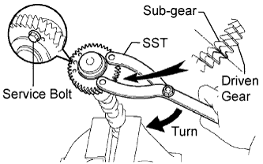 |
Using SST, align the holes of the driven gear and sub-gear by turning the sub-gear clockwise, and temporarily install a service bolt.
| Thread Diameter | Thread Pitch | Bolt Length |
| 6 mm | 1.0 mm | 16 to 20 mm (0.630 to 0.787 in.) |
Align the gear teeth of the driven gear and sub-gear, and tighten the service bolt.
| 2. INSTALL CAMSHAFT DRIVE GEAR |
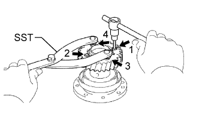 |
Align the timing tube knock pin with the knock pin groove of the drive gear, and temporarily install the drive gear with the 4 bolts.
Using SST and a 5 mm hexagon wrench, uniformly tighten the 4 bolts in several steps, in the sequence shown in the illustration.
| 3. INSTALL CAMSHAFT TIMING TUBE ASSEMBLY |
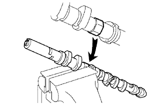 |
Mount the hexagonal portion of the camshaft in a vise.
Apply a light coat of engine oil to the camshaft and camshaft timing tube.
 |
Align the camshaft knock pin with the knock pin hole of the timing tube, and push the timing tube by hand until the camshaft knock pin touches the bottom of the timing tube knock pin hole.
Using a 10 mm socket hexagon wrench, install the bolt.
Install the seal washer and screw plug.
| 4. INSTALL CAMSHAFT (for Bank 1) |
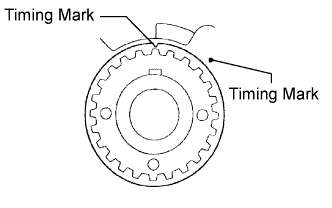 |
Check that the timing mark of the crankshaft timing pulley is in the position shown in the illustration, and that the piston is below the TDC of compression.
Apply a light coat of engine oil to the cam lobe and gear of the camshaft and the journal of the cylinder head.
 |
Using a wrench, align the timing marks (2 dot marks each) of the camshaft drive and driven gears, and set the No. 3 and No. 4 camshafts in place.
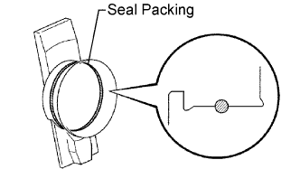 |
Apply seal packing to the camshaft housing plug groove.
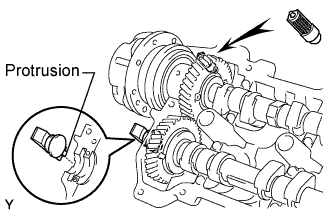 |
Install the camshaft housing plug and oil control valve filter to the cylinder head as shown in the illustration.
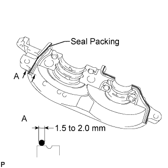 |
Apply seal packing to the No. 5 bearing cap as shown in the illustration.
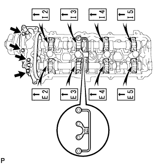 |
Install a new seal washer to each bearing cap bolt indicated by an arrow in the illustration, and apply engine oil to the threads of the bolts. Then temporarily install them.
Apply engine oil to the threads and washer part of the bearing cap bolts not indicated in the illustration.
Temporarily install the oil feed pipe and bearing caps with the 18 bearing cap bolts, as shown in the illustration.
| Item | Length |
| Bolt A with seal washer | 94 mm (3.70 in.) |
| Bolt B with seal washer | 72 mm (2.84 in.) |
| Bolt C | 25 mm (0.984 in.) |
| Bolt D | 55 mm (2.17 in.) |
| Bolt E | 40 mm (1.58 in.) |
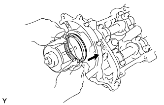 |
Push in the camshaft setting oil seal.
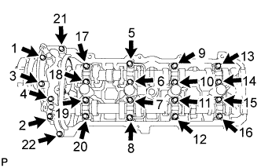 |
Uniformly tighten the 22 bearing cap bolts in several steps, in the sequence shown in the illustration.
 |
Bring the service bolt installed in the driven sub-gear upward by turning the hexagonal portion of the camshaft with a wrench.
Remove the service bolt.
| 5. INSTALL CAMSHAFT (for Bank 2) |
Apply a light coat of engine oil to the cam lobe and gear of the camshaft and the journal of the cylinder head.
 |
Using a wrench, align the timing marks (1 dot mark each) of the camshaft drive and driven gears, and set the camshaft and No. 2 camshaft in place.
Apply seal packing to the camshaft housing plug groove.
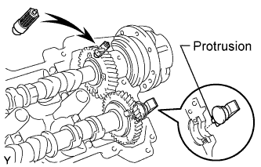 |
Install the camshaft housing plug and oil control valve filter to the cylinder head as shown in the illustration.
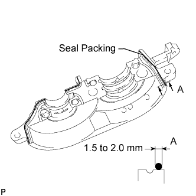 |
Apply seal packing to the No. 1 bearing cap as shown in the illustration.
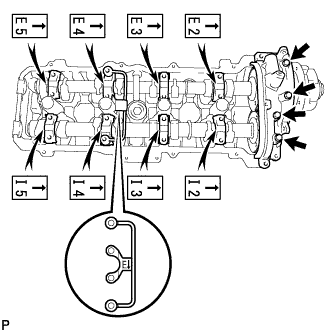 |
Install a new seal washer to each bearing cap bolt indicated by an arrow in the illustration, and apply engine oil to the threads of the bolts. Then temporarily install them.
Apply engine oil to the threads and washer part of the bearing cap bolts not indicated in the illustration.
Temporarily install the oil feed pipe and bearing caps with the 18 bearing cap bolts, as shown in the illustration.
| Item | Length |
| Bolt A with seal washer | 94 mm (3.70 in.) |
| Bolt B with seal washer | 72 mm (2.84 in.) |
| Bolt C | 25 mm (0.984 in.) |
| Bolt D | 55 mm (2.17 in.) |
| Bolt E | 40 mm (1.58 in.) |
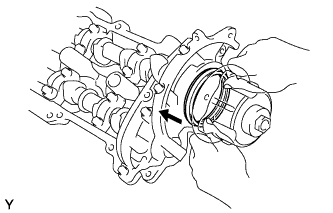 |
Push in the camshaft setting oil seal.
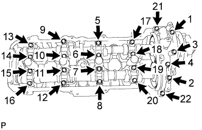 |
Uniformly tighten the 22 bearing cap bolts in several steps, in the sequence shown in the illustration.
 |
Bring the service bolt installed in the driven sub-gear upward by turning the hexagonal portion of the camshaft with a wrench.
Remove the service bolt.
| 6. INSTALL REAR NO. 2 TIMING BELT PLATE LH |
 |
Install the timing plate with the 2 bolts.
| 7. INSTALL REAR NO. 2 TIMING BELT PLATE RH |
 |
Install the timing plate with the 2 bolts and stud bolt.
| 8. INSTALL CAMSHAFT TIMING PULLEY SUB-ASSEMBLY LH |
 |
Align the camshaft timing tube knock pin with the knock pin groove of the timing pulley.
Temporarily install the 4 bolts of the camshaft timing pulley.
Hold the hexagonal portion of the camshaft with a wrench.
Using a 5 mm hexagon wrench, tighten the 4 bolts.
| 9. INSTALL CAMSHAFT TIMING PULLEY |
 |
Align the camshaft timing tube knock pin with the knock pin groove of the timing pulley.
Temporarily install the 4 bolts of the camshaft timing pulley.
Hold the hexagonal portion of the camshaft with a wrench.
Using a 5 mm hexagon wrench, tighten the 4 bolts.
| 10. INSTALL TIMING BELT |
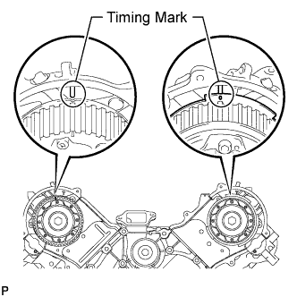 |
Set the No. 1 cylinder to TDC/compression.
Turn the hexagonal portion of the camshaft to align the timing marks of the camshaft timing pulleys and timing belt plates.
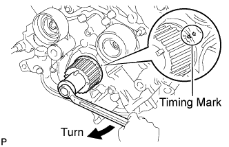 |
Using the pulley bolt, turn the crankshaft to align the timing marks of the crankshaft timing pulley and oil pump body.
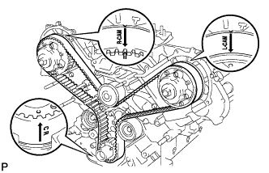 |
Install the timing belt.
Remove any oil or water from each pulley, and keep them clean.
Face the front mark (arrow) on the timing belt forward.
Align the timing marks on the timing belt and crankshaft timing pulley, and the timing belt and camshaft timing pulleys, and install the timing belt.
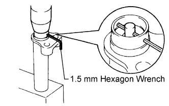 |
Install the belt tensioner.
Remove the dust seal from the belt tensioner.
Using a press, slowly press in the push rod using a force of 981 to 9807 N (100 to 1000 kgf, 220.5 to 2204.7 lbf).
Align the holes of the push rod and housing, and pass a 1.5 mm hexagon wrench through the holes to keep the setting position of the push rod.
Release the press.
Install the dust seal to the belt tensioner.
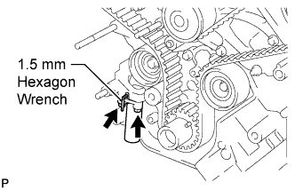 |
Temporarily install the belt tensioner with the 2 bolts.
Tighten the 2 bolts.
Using pliers, remove the 1.5 mm hexagon wrench from the timing belt tensioner.
| 11. CHECK NO. 1 CYLINDER TO TDC/COMPRESSION |
 |
Using the pulley bolt, slowly turn the crankshaft timing pulley 2 revolutions from the TDC to TDC.
Check that each pulley is aligned with each timing mark as shown in the illustration.
If the timing marks are not aligned, remove the timing belt and reinstall it.
Remove the pulley bolt.
| 12. INSPECT VALVE CLEARANCE |
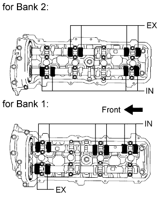 |
Check only the valves indicated.
Using a feeler gauge, measure the clearance between the valve lifter and camshaft.
| Item | Specified Condition |
| Intake | 0.15 to 0.25 mm (0.00591 to 0.00984 in.) |
| Exhaust | 0.25 to 0.35 mm (0.00984 to 0.0138 in.) |
Record the out-of-specification valve clearance measurements. They will be used later to determine the required replacement adjusting shim.
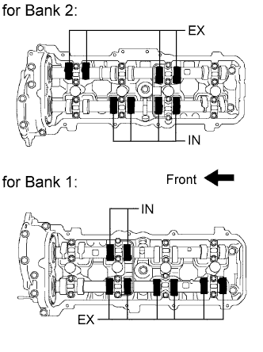 |
Turn the crankshaft 1 complete revolution (360°) and align the camshaft timing marks.
Check only the valves indicated in the illustration.
Using a feeler gauge, measure the clearance between the valve lifter and camshaft.
| Item | Specified Condition |
| Intake | 0.15 to 0.25 mm (0.00591 to 0.00984 in.) |
| Exhaust | 0.25 to 0.35 mm (0.00984 to 0.0138 in.) |
Record the out-of-specification valve clearance measurements. They will be used later to determine the required replacement adjusting shim.
| 13. ADJUST VALVE CLEARANCE |
Remove the timing belt (Click here).
Remove the camshaft (Click here).
Remove the valve lifter and adjusting shim.
Using a micrometer, measure the thickness of the removed shim.
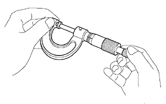 |
Determine the replacement adjusting shim size according to the formula or charts below.
Calculate the thickness of a new shim so that the valve clearance comes within the specified value.
Select a new shim with a thickness as close as possible to the calculated value.
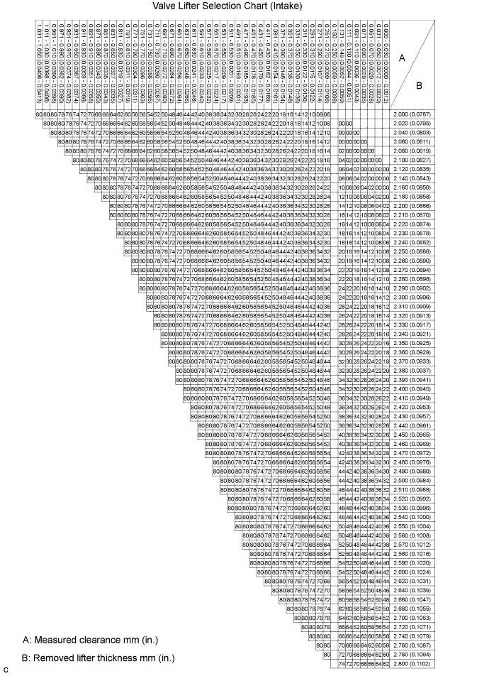
| Shim No. | Thickness | Shim No. | Thickness | Shim No. | Thickness |
| 00 | 2.000 mm (0.0787 in.) | 28 | 2.280 mm (0.0898 in.) | 56 | 2.560 mm (0.1008 in.) |
| 02 | 2.020 mm (0.0795 in.) | 30 | 2.300 mm (0.0906 in.) | 58 | 2.580 mm (0.1016 in.) |
| 04 | 2.040 mm (0.0803 in.) | 32 | 2.320 mm (0.0913 in.) | 60 | 2.600 mm (0.1024 in.) |
| 06 | 2.060 mm (0.0811 in.) | 34 | 2.340 mm (0.0921 in.) | 62 | 2.620 mm (0.1031 in.) |
| 08 | 2.080 mm (0.0819 in.) | 36 | 2.360 mm (0.0929 in.) | 64 | 2.640 mm (0.1039 in.) |
| 10 | 2.100 mm (0.0827 in.) | 38 | 2.380 mm (0.0937 in.) | 66 | 2.660 mm (0.1047 in.) |
| 12 | 2.120 mm (0.0835 in.) | 40 | 2.400 mm (0.0945 in.) | 68 | 2.680 mm (0.1055 in.) |
| 14 | 2.140 mm (0.0843 in.) | 42 | 2.420 mm (0.0953 in.) | 70 | 2.700 mm (0.1063 in.) |
| 16 | 2.160 mm (0.0850 in.) | 44 | 2.440 mm (0.0961 in.) | 72 | 2.720 mm (0.1071 in.) |
| 18 | 2.180 mm (0.0858 in.) | 46 | 2.460 mm (0.0969 in.) | 74 | 2.740 mm (0.1079 in.) |
| 20 | 2.200 mm (0.0866 in.) | 48 | 2.480 mm (0.0976 in.) | 76 | 2.760 mm (0.1087 in.) |
| 22 | 2.220 mm (0.0874 in.) | 50 | 2.500 mm (0.0984 in.) | 78 | 2.780 mm (0.1094 in.) |
| 24 | 2.240 mm (0.0882 in.) | 52 | 2.520 mm (0.0992 in.) | 80 | 2.800 mm (0.1102 in.) |
| 26 | 2.260 mm (0.0890 in.) | 54 | 2.540 mm (0.1000 in.) | - | - |
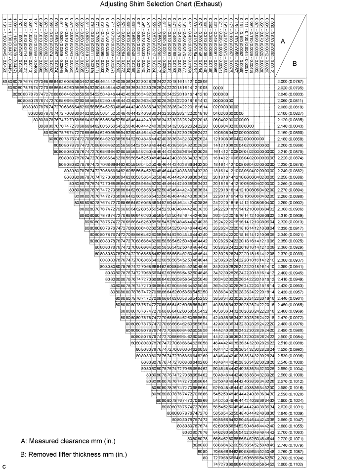
| Shim No. | Thickness | Shim No. | Thickness | Shim No. | Thickness |
| 00 | 2.000 mm (0.0787 in.) | 28 | 2.280 mm (0.0898 in.) | 56 | 2.560 mm (0.1008 in.) |
| 02 | 2.020 mm (0.0795 in.) | 30 | 2.300 mm (0.0906 in.) | 58 | 2.580 mm (0.1016 in.) |
| 04 | 2.040 mm (0.0803 in.) | 32 | 2.320 mm (0.0913 in.) | 60 | 2.600 mm (0.1024 in.) |
| 06 | 2.060 mm (0.0811 in.) | 34 | 2.340 mm (0.0921 in.) | 62 | 2.620 mm (0.1031 in.) |
| 08 | 2.080 mm (0.0819 in.) | 36 | 2.360 mm (0.0929 in.) | 64 | 2.640 mm (0.1039 in.) |
| 10 | 2.100 mm (0.0827 in.) | 38 | 2.380 mm (0.0937 in.) | 66 | 2.660 mm (0.1047 in.) |
| 12 | 2.120 mm (0.0835 in.) | 40 | 2.400 mm (0.0945 in.) | 68 | 2.680 mm (0.1055 in.) |
| 14 | 2.140 mm (0.0843 in.) | 42 | 2.420 mm (0.0953 in.) | 70 | 2.700 mm (0.1063 in.) |
| 16 | 2.160 mm (0.0850 in.) | 44 | 2.440 mm (0.0961 in.) | 72 | 2.720 mm (0.1071 in.) |
| 18 | 2.180 mm (0.0858 in.) | 46 | 2.460 mm (0.0969 in.) | 74 | 2.740 mm (0.1079 in.) |
| 20 | 2.200 mm (0.0866 in.) | 48 | 2.480 mm (0.0976 in.) | 76 | 2.760 mm (0.1087 in.) |
| 22 | 2.220 mm (0.0874 in.) | 50 | 2.500 mm (0.0984 in.) | 78 | 2.780 mm (0.1094 in.) |
| 24 | 2.240 mm (0.0882 in.) | 52 | 2.520 mm (0.0992 in.) | 80 | 2.800 mm (0.1102 in.) |
| 26 | 2.260 mm (0.0890 in.) | 54 | 2.540 mm (0.1000 in.) | - | - |
Apply a light coat of engine oil to the valve lifters, adjusting shims and valve stem tip.
Place a new adjusting shim on the valve stem.
Place the valve lifter.
Install the camshaft (Click here).
Install the timing belt (Click here).
Check the valve clearance.
If the result is not as specified, adjust the valve clearance.
| 14. INSTALL SPARK PLUG TUBE GASKET |
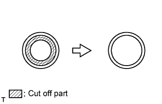 |
Using a cutter knife, cut off the seal part of the removed gasket.
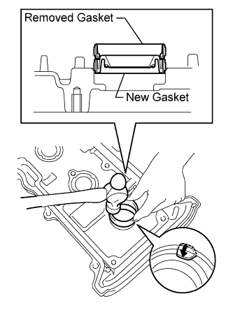 |
Using the removed gasket and a hammer, tap in a new gasket until it stops.
Apply a light coat of MP grease to the lip of the gasket.
Return the 8 ventilation case claws to the original positions.
| 15. INSTALL SEMICIRCULAR PLUG |
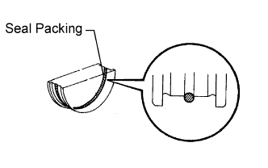 |
Apply seal packing to the semicircular plug grooves.
Install the 4 semicircular plugs to the cylinder heads.
| 16. INSTALL CYLINDER HEAD COVER SUB-ASSEMBLY LH |
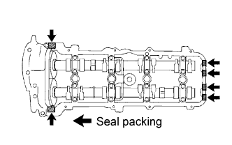 |
Install a new gasket to the cylinder head cover.
Apply seal packing to the cylinder head as shown in the illustration.
 |
Install the cylinder head cover with the 9 bolts. Uniformly tighten the bolts in several steps.
| 17. INSTALL CYLINDER HEAD COVER SUB-ASSEMBLY |
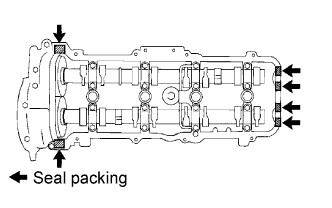 |
Install a new gasket to the cylinder head cover.
Apply seal packing to the cylinder head as shown in the illustration.
 |
Install the cylinder head cover with the 9 bolts. Uniformly tighten the bolts in several steps.
| 18. INSTALL NO. 1 VENTILATION HOSE |
 |
Install the No. 1 ventilation hose to the intake manifold and ventilation valve.
| 19. INSTALL SPARK PLUG |
Install the 8 spark plugs.
| 20. INSTALL IGNITION COIL ASSEMBLY |
 |
Install the 8 ignition coils with the 8 bolts.
Connect the 8 ignition coil connectors.
| 21. INSTALL NO. 2 FUEL HOSE |
for engine side:
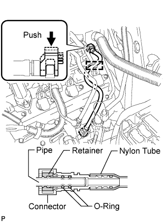 |
Connect the fuel hose to the No. 3 fuel pipe.
Attach the lock claws to the connector by pushing down on the cover, as shown in the illustration.
Attach the fuel hose clamp.
for body side:
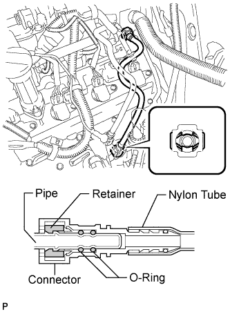 |
Connect the fuel hose to the fuel pipe.
| 22. INSTALL FUEL PRESSURE PULSATION DAMPER ASSEMBLY |
Install 2 new gaskets and the fuel hose with the fuel pressure pulsation damper.
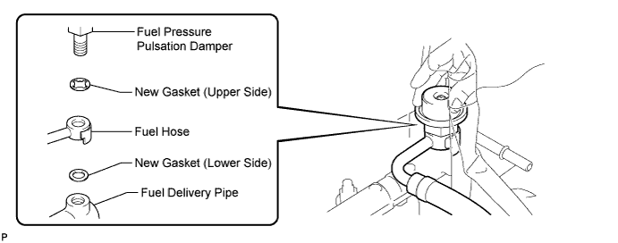
Tighten the fuel pressure pulsation damper by hand.
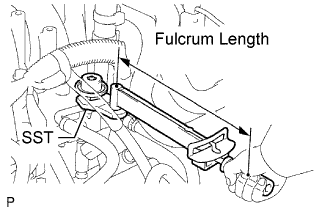 |
Using SST, tighten the union bolt.
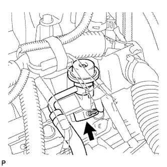 |
Connect the fuel injector connector.
| 23. CONNECT FUEL HOSE |
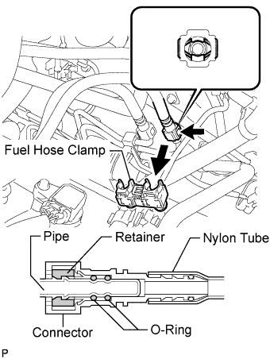 |
Connect the fuel hose.
Install the fuel hose clamp.
| 24. CONNECT WIRE HARNESS |
 |
Connect connector A to the engine room relay block.
Connect the 2 connectors and 2 clamps to the engine room relay block.
Connect the wire harness clamp to the cylinder head cover LH.
 |
Connect the wire harness clamp.
Connect the ground wire with the bolt.
Connect the 2 air injection control driver connectors.
| 25. INSTALL NO. 1 WATER BY-PASS PIPE (w/ Air Cooled Transmission Oil Cooler) |
 |
Install the water by-pass pipe with the 2 bolts.
| 26. CONNECT WATER HOSE SUB-ASSEMBLY |
 |
Connect the water by-pass hose.
w/ Rear Heater:
Connect the water hoses labeled A and B.
w/o Rear Heater:
Connect the water hoses labeled A.
| 27. INSTALL CAMSHAFT POSITION SENSOR ASSEMBLY |
 |
Install the camshaft position sensor with the bolt and stud bolt.
| 28. INSTALL NO. 1 CRANKSHAFT POSITION SENSOR PLATE |
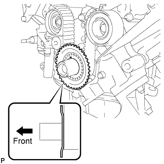 |
Install the sensor plate as shown in the illustration.
| 29. INSTALL TIMING BELT COVER SPACER |
 |
Install the cover spacer and gasket.
| 30. INSTALL NO. 1 TIMING BELT COVER |
 |
Install the timing belt cover with the 4 bolts.
| 31. INSTALL CRANKSHAFT DAMPER SUB-ASSEMBLY |
Align the pulley set key with the key groove of the crankshaft damper.
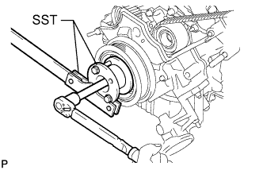 |
Using SST, hold the crankshaft pulley and install the pulley bolt.
| 32. INSTALL FAN BRACKET SUB-ASSEMBLY |
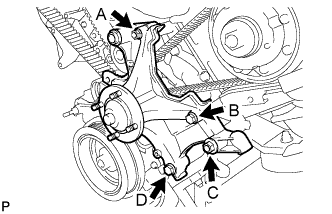 |
Install the fan bracket with the 2 bolts and 2 nuts.
| 33. INSTALL V-RIBBED BELT TENSIONER ASSEMBLY |
 |
Install the belt tensioner with the bolt and 2 nuts.
| 34. INSTALL NO. 2 TIMING BELT COVER SUB-ASSEMBLY |
 |
Install the timing belt cover and fit the 2 claws into each part.
Install the 2 bolts.
| 35. INSTALL NO. 3 TIMING BELT COVER SUB-ASSEMBLY RH |
 |
Install the timing belt cover with the 3 bolts and nut.
| 36. INSTALL NO. 3 TIMING BELT COVER SUB-ASSEMBLY LH |
 |
Pass the camshaft position sensor wire through the cover hole.
Install the timing belt cover with the 4 bolts.
Install the wire grommet to the timing belt cover.
Connect the sensor connector.
Install the sensor wire to the 2 wire clamps on the cover.
 |
Connect the engine wire to the 3 wire clamps.
Connect the camshaft timing oil control valve connector and control motor connector.
| 37. INSTALL NO. 2 IDLER PULLEY SUB-ASSEMBLY |
 |
Install the idler pulley and cover plate with the bolt.
| 38. INSTALL OIL COOLER PIPE |
 |
Using needle-nose pliers, grip the claws of the clamps and slide the clamps to connect the 3 water by-pass hoses.
Install the oil cooler pipe with the cap nut and bolt.
| 39. INSTALL GENERATOR ASSEMBLY |
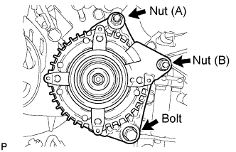 |
Install the generator with the bolt and 2 nuts.
 |
Connect the generator connector.
Connect the generator wire with the nut.
Install the terminal cap.
Connect the harness bracket to the generator with the bolt.
| 40. CONNECT VANE PUMP ASSEMBLY |
 |
Connect the vane pump with the 2 bolts and nut.
 |
Connect the connector.
| 41. CONNECT COOLER COMPRESSOR ASSEMBLY |
 |
Connect the compressor. Then install it and the No. 1 compressor stay with the nut and 3 bolts.
Install the cooler refrigerant suction hose with the bolt.
Connect the connector.
| 42. INSTALL NO. 2 RADIATOR HOSE |
 |
Using needle-nose pliers, grip the claws of the clamps and slide the clamps to install the radiator hose.
| 43. INSTALL FAN SHROUD |
 |
Install the fan pulley to the water pump.
Place the shroud together with the cooling fan between the radiator and engine.
Temporarily install the cooling fan to the water pump with the 4 nuts. Tighten the nuts as much as possible by hand.
 |
Attach the claws of the shroud to the radiator as shown in the illustration.
Install the shroud with the 2 bolts.
Connect the oil cooler tube to the fan shroud with the 2 bolts.
w/ Air Cooled Transmission Oil Cooler:
Pass the hose through the flexible hose clamp and close the clamp as shown in the illustration.
Connect the reservoir hose to the upper side of the radiator tank.
|
Tighten the 4 nuts of the cooling fan.
| 44. INSTALL FAN AND GENERATOR V BELT |
 |
Set the V belt onto every part except the belt tensioner, as shown in the illustration.
Loosen the V belt by turning the belt tensioner counterclockwise.
Set the V belt to the belt tensioner.
 |
Check that the belt fits properly in the ribbed grooves.
 |
Check that the arrow on the belt tensioner is within area "A".
If the arrow is outside area "A", replace the fan and generator V belt.
| 45. INSTALL NO. 1 RADIATOR HOSE |
 |
Using needle-nose pliers, grip the claws of the clamps and slide the clamps to install the radiator hose.
| 46. INSTALL AIR CLEANER ASSEMBLY |
 |
Install the air cleaner with the 3 bolts.
Connect the clamp and MAF connector.
| 47. INSTALL AIR CLEANER HOSE ASSEMBLY |
 |
Install the air cleaner hose so that the protrusion of the air cleaner cap aligns with the groove of the hose as shown in the illustration.
Tighten the 2 clamps.
Connect the vacuum transmitting hose.
Connect the No. 2 ventilation hose.
| 48. CONNECT CABLE TO NEGATIVE BATTERY TERMINAL |
| 49. ADD ENGINE OIL |
Install a new gasket and the drain plug.
Add new engine oil.
| Oil Grade | Oil Viscosity (SAE) |
| API grade SL "Energy-Conserving", SM "Energy-Conserving" or ILSAC multigrade engine oil | 10W-30 (10W-30 is best choice for fuel economy and good starting in cold weather). |
| API grade SL or SM multigrade engine oil | 10W-30 |
| Item | Specified Condition |
| Drain and refill with oil filter change | 6.2 liters (6.6 US qts, 5.5 Imp. qts) |
| Drain and refill without oil filter change | 5.7 liters (6.0 US qts, 5.0 Imp. qts) |
| Dry fill | 7.1 liters (7.5 US qts, 6.2 Imp. qts) |
| 50. ADD ENGINE COOLANT |
Add engine coolant.
| Item | Specified Condition | |
| w/o Transmission oil cooler | w/o Rear Heater | 13.4 liters (14.2 US qts, 11.8 Imp. qts) |
| w/ Rear Heater | 16.3 liters (17.2 US qts, 14.3 Imp. qts) | |
| w/ Transmission oil cooler | w/o Rear Heater | 14.1 liters (14.9 US qts, 12.4 Imp. qts) |
| w/ Rear Heater | 16.9 liters (17.9 US qts, 14.9 Imp. qts) | |
 |
Slowly pour coolant into the radiator reservoir until it reaches the F line.
Install the radiator reservoir cap.
Press the inlet and outlet radiator hoses several times by hand, and then check the coolant level. If the coolant level is low, add coolant.
Install the radiator cap.
Start the engine and warm it up until the thermostat opens.
Maintain the engine speed at 2000 to 2500 rpm.
Press the inlet and outlet radiator hoses several times by hand to bleed air.
Stop the engine, and wait until the engine coolant cools down to the ambient temperature.
 |
Check that the coolant level is between the F and L lines. If the coolant level is below the L line, repeat all of the procedures above. If the coolant level is above the F line, drain coolant so that the coolant level is between the F and L lines.
| 51. INSPECT FOR FUEL LEAK |
Connect the intelligent tester to the DLC3.
Turn the engine switch on (IG) and intelligent tester ON.
Enter the following menus: Powertrain / Engine and ECT / Active Test / Activate the Fuel Pump Speed Control.
Check that there are no fuel leaks after doing maintenance anywhere on the fuel system.
| 52. INSPECT FOR OIL LEAK |
Start the engine. Make sure that there are no oil leaks from the area that was worked on.
| 53. INSPECT ENGINE OIL LEVEL |
Warm up the engine, then stop the engine and wait for 5 minutes.
Check that the engine oil level is between the low level and full level marks on the dipstick.
If low, check for leakage and add oil up to the full level mark.
| 54. INSPECT FOR COOLANT LEAK |
 |
Fill the radiator with coolant and attach a radiator cap tester.
Warm up the engine.
Using the radiator cap tester, increase the pressure inside the radiator to 123 kPa (1.3 kgf/cm2, 18 psi), and check that the pressure does not drop.
If the pressure drops, check the hoses, radiator and water pump for leaks. If no external leaks are found, check the heater core, cylinder block and head.
| 55. INSPECT IGNITION TIMING |
Warm up and stop the engine.
Allow the engine to warm up to a normal operating temperature.
When using the intelligent tester:
Connect the intelligent tester to the DLC3.
Start the engine and idle it.
Push the intelligent tester main switch ON.
Enter the following menus: Powertrain / Engine and ECT / Data List / Primary / IGN Advance.
Disconnect the intelligent tester from the DLC3.
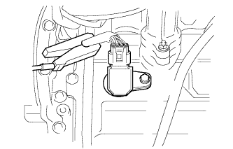 |
When not using the intelligent tester:
Remove the 2 nuts and V-bank cover.
Connect the tester probe of a timing light to the wire of the ignition coil connector for the No. 1 cylinder.
 |
Using SST, connect terminals 13 (TC) and 4 (CG) of the DLC3.
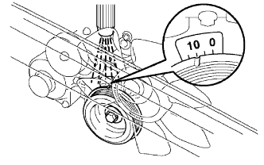 |
Using the timing light, check the ignition timing.
Remove SST from the DLC3.
Disconnect the timing light from the engine.
Install the V-bank cover with the 2 nuts.
| 56. INSPECT ENGINE IDLE SPEED |
Warm up and stop the engine.
Allow the engine to warm up to a normal operating temperature.
When using the intelligent tester:
Connect the intelligent tester to the DLC3.
Race the engine at 2500 rpm for approximately 90 seconds.
Push the intelligent tester main switch ON.
Enter the following menus: Powertrain / Engine and ECT / Data List / Primary / Engine Speed.
Disconnect the intelligent tester from the DLC3.
 |
When not using the intelligent tester:
Using SST, connect a tachometer probe to terminal 9 (TAC) of the DLC3.
Race the engine at 2500 rpm for approximately 90 seconds.
Check the idle speed.
Disconnect the tachometer from the DLC3.
| 57. INSTALL V-BANK COVER SUB-ASSEMBLY |
 |
Attach the 2 V-bank cover hooks to the bracket.
Install the V-bank cover with the 2 nuts.
| 58. INSTALL FRONT FENDER APRON SEAL LH |
 |
Install the fender apron seal with the 4 clips.
| 59. INSTALL FRONT FENDER APRON SEAL LH (w/ KDSS) |
 |
Install the fender apron seal with the 3 clips.
| 60. INSTALL FRONT FENDER APRON SEAL FRONT RH |
 |
Install the fender apron seal with the 3 clips.
| 61. INSTALL NO. 2 ENGINE UNDER COVER |
 |
Install the No. 2 engine under cover with the 2 bolts.
| 62. INSTALL NO. 1 ENGINE UNDER COVER SUB-ASSEMBLY |
 |
Install the No. 1 engine under cover with the 10 bolts.
| 63. INSTALL FRONT FENDER SPLASH SHIELD SUB-ASSEMBLY LH |
 |
Push in the clip indicated by the arrow in the illustration to install the fender splash shield.
Install the 3 bolts and screw.
| 64. INSTALL FRONT FENDER SPLASH SHIELD SUB-ASSEMBLY RH |
| 65. INSPECT ENGINE COOLANT LEVEL |
 |
Check that the engine coolant level is between the L and F lines when the engine is cold.
If the engine coolant is low, check for leaks and add "TOYOTA Super Long Life Coolant" or similar high quality ethylene glycol based non-silicate, non-amine, non-nitrite and non-borate coolant with long-life hybrid organic acid technology to the F line.
Remove the radiator cap, and check that the coolant level is up to the radiator filler hole.